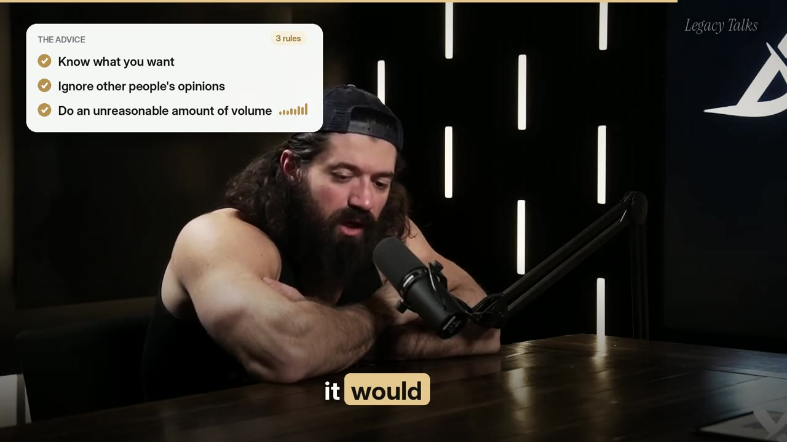

Project 02
A raw podcast clip, redesigned after my review
Alex Hormozi answers what advice he would leave the world. The first version followed my brief but felt loud and cheap. I directed a minimal redesign, then refined the motion graphics and colour over a few rounds.
Final video, 0:30. Footage: Alex Hormozi podcast, used for a portfolio exercise.
Raw
62-second clip
Final
30 seconds, silences removed
Revisions
A redesign, then a few refinement rounds
How it worked
Me1. Wrote the briefA detailed prompt covering the hook, pacing, zooms, captions, graphics and the files I needed back.
Claude2. Made the first cutTranscribed the clip, removed the silences, added captions and graphics, then checked its own frames.
Me3. Reviewed itIt met the brief, but the style felt loud and cheap. I gave clear design feedback.
Claude4. Redesigned and refined itLandscape, fewer zooms and no emojis, then UI cards tied to the story and a warm champagne accent that matches the set.
Before and after
First version

- Vertical, Shorts-style
- Heavy captions, emoji boxes
- 8 zooms in 30 seconds
Final version

- Landscape, made for YouTube
- UI cards that follow the story
- Champagne accent, 3 gentle zooms
My review
The first version met every technical spec but missed the intended mood. The edit needed to feel minimal and calm, letting the conversation lead rather than the effects.
Read my prompt
Edit this entire raw podcast clip (1–2 min) into an engaging video for youtube. Use the whole clip; don't pick out one part of it. 1. HOOK – Find the strongest 3-second line and put it at the start as a teaser. Add a big hook title (max 6 words). 2. PACING – Cut silences, long pauses and "um/uh" with clean jump cuts. Don't cut mid-word or change the meaning. 3. CAMERA MOVES – Punch-in zoom (115–120%) on key words, slow push-in (108%) on longer explanations, one move every 3–5 seconds at most. 4. CAPTIONS – Word-by-word, 2–4 words at a time, keywords highlighted, centre-lower. 5. MOTION GRAPHICS – Lower thirds, callouts, progress bar, logo watermark, end card. Eased entries, 8–12 frames. 6. OUTPUT – Final MP4, SRT captions, a timecoded list of every cut, zoom and graphic, 3 post captions and 5 hashtags. Check frames before sending.